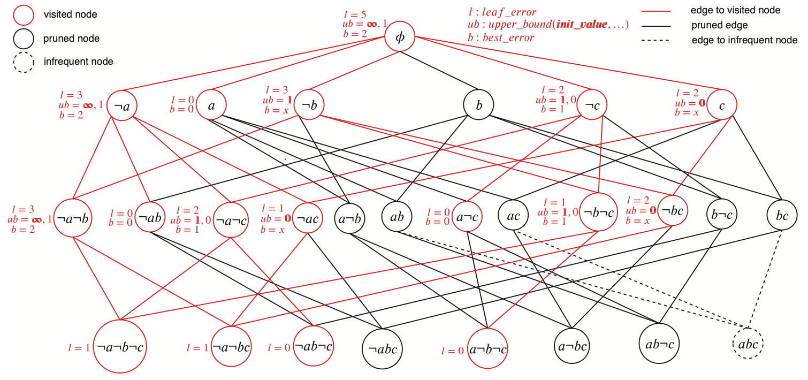
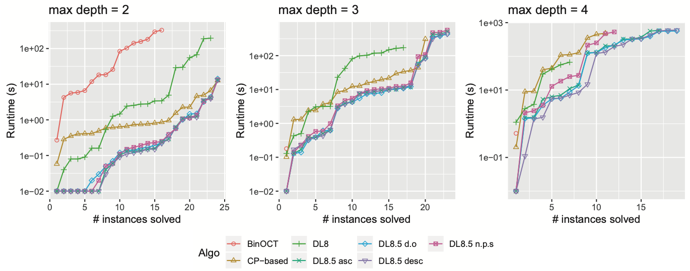

- 24 個中 19 個で最適性を証明二値のデータ 24 個、深さ 4、制限時間 10 分での結果。BinOCT は 1 個、DL8 は 7 個、制約プログラミングによる方法は 11 個だった。
- 保存しないと 12 個に減る上界のもとで木が見つからなかったことをキャッシュに残さないようにした DL8.5 では、深さ 4 で最適性を証明できたのが 19 個から 12 個に減った。
- 調べる節点 27 → 17論文の 3 属性・11 例の例で、DL8 は頻度の足りない 1 つを除くすべての節点を調べるが、DL8.5 が調べるのは 17 個だった（属性をアルファベット順に調べた場合）。
MIP による最適な決定木が注目される一方で、2007 年の DL8 とは比べられていなかった
CART や C4.5 は木を根から貪欲に伸ばすので、得られる木が最適とは限らない。深さの上限のもとで最も精度の高い木や、葉ごとの最小データ数を守る中で最も精度の高い木、公平性などの制約を満たす木であることは保証されない。そのため最適性を保証する学習が再び注目され、近年は Bertsimas と Dunn の OCT、Verwer と Zhang の BinOCT のような混合整数計画（MIP）による方法が有名な会議や論文誌で発表されていた。
一方で、制約のもとで最適な決定木を求める方法としては DL8（Nijssen と Fromont、2007 年）が以前からあった。DL8 は木の経路をアイテム集合とみなし、アイテム集合の上で動的計画法を行う。論文によれば、MIP による方法の著者たちは DL8 を知らなかったらしく、比較もされていなかった。論文はまず DL8 が MIP と同じ設定で使えて、古いにもかかわらず MIP による方法を大きく上回ることを示し、そのうえで DL8 を改良した DL8.5 を提案する。
二値の特徴量の上で、深さと葉の最小データ数の制約のもとで誤分類の数が最小の木を求める
DL8 と同じく、データは二値に直して使う。カテゴリの属性は値ごとに、数値の属性はしきい値の候補ごとに二値の列を作る。各例を「属性 \(a\) が 1 なら \(a\)、0 なら \(\neg a\)」のアイテムを並べたアイテム集合とみなすと、決定木の各経路はアイテム集合 \(I\) で表せる。\(I\) を含む例の集合を \(\mathrm{cover}(I)\)、そのうちクラス \(c\) の例の数を \(\mathrm{Sup}(I, c)\) とすると、葉の誤りは次のようになる。
求めるのは、木を表すアイテム集合の集まり \(\mathcal{DT}\) のうち、\(\sum_{I \in \mathcal{DT}} \mathrm{leaf\_error}(I)\) が最小で、すべての \(I\) について \(|I| \le \mathit{maxdepth}\)（深さの上限）と \(|\mathrm{cover}(I)| \ge \mathit{minsup}\)（葉の最小データ数）を満たすものである。DL8 では深さの制約は必須ではなく、MIP による方法は葉の最小データ数の制約を使っていなかった。この誤りの式は 3 クラス以上の分類にもそのまま使える。
DL8 は部分木の結果をキャッシュで使い回すが、根の答えが出るのはすべてのアイテム集合を調べ終えたあとである
DL8 はアイテム集合 \(I\) に対して、\(I\) を含む例だけで最適な木とその誤りを再帰的に求める。例の集合を 2 つに分けるすべての方法（属性ごとの分岐）を試し、それぞれの側で最適な木を再帰的に求めて、合計の誤りが最小の分岐を選ぶ。同じアイテム集合 \(ab\) には「\(a\) のあと \(b\)」でも「\(b\) のあと \(a\)」でも届くので、結果をキャッシュに保存して使い回す。深さの上限に達したとき、誤りが 0 のとき、片方の枝が葉の最小データ数に満たないときは、そこで探索を止める。
ただし DL8 の枝刈りは弱い。論文の 3 属性・11 例の例では、頻度が足りない \(abc\) を除くすべての節点を調べる。根の最適な木はすべての子を調べたあとでしか決まらないので、探索を途中で止めると答えが何も得られない。
見つけた木の誤りを上界として子に渡し、上界を超えることが分かった枝はその場で打ち切る
DL8.5 の再帰の手続きはアイテム集合 \(I\) に加えて上界 \(\mathit{ub}\) を受け取る。誤りが \(\mathit{ub}\) 以下の木を見つけられなければ、木の代わりに NO_TREE を返す。最初の上界は \(+\infty\) で、木が見つかるたびに上界を下げて子に渡す。
- 属性 \(i\) で分けるとき、まず片方の枝 \(I \cup \{\neg i\}\) を上界 \(\mathit{ub}\) で解く。その誤り \(e_1\) がすでに \(\mathit{ub}\) を超えていれば、もう片方は調べない。
- もう片方の枝 \(I \cup \{i\}\) には、残りの余裕 \(\mathit{ub} - e_1\) を上界として渡す。
- 合計の誤り \(b = e_1 + e_2\) の木が見つかったら、以後の属性には \(\mathit{ub} = b - 1\) を渡す（誤りは整数なので、より良い木だけを探せばよい）。誤りが 0 の木が見つかればその場で終える。
論文の例では、根でまず属性 A を調べて誤り 2 の木が見つかり、上界が \(+\infty\) から 1 に下がる。次に属性 C の片方の枝 \(\neg c\) には上界 1 が渡り、その中で属性 A を調べると誤り 1 の木が見つかって上界は 0 になる。続く属性 B では最初の枝 \(\neg b \neg c\) の誤りが 1 で上界 0 を超えるので、もう片方の枝は調べない。こうした打ち切りで、例の束で調べる節点は 27 個から 17 個に減る（図1）。

上界のもとで木が見つからなかったことも、その上界と一緒にキャッシュに残して使い回す
DL8.5 では、上界のもとで木が見つからなかったアイテム集合もキャッシュに保存する。値は NO_TREE で、そのとき使った上界も一緒に記録する。あとで同じアイテム集合に、記録した上界と同じかそれより厳しい上界で再び来たら、探索せずにすぐ NO_TREE を返す。論文の例では、\(\neg a c\) に \(\neg a\) から上界 0 で来たとき、最初の枝のあとで木が見つからないことが分かり、NO_TREE を保存する。2 回目に \(c\) から同じ上界 0 で来たときは、キャッシュからその事実を取り出して属性 A をそれ以上調べない。
ほかに 2 つの変更で、途中で止めても答えを返せるようにした（anytime）。1 つは制限時間に達したら探索を打ち切れるようにしたこと、もう 1 つは属性を調べる順序を発見的に決められるようにしたことである。順序はデータの元の順（d.o.）、情報利得の小さい順（asc）、大きい順（desc）の 3 通りを試した。良い木を早く見つければ、上界が早く下がり、枝刈りで省ける探索も増える。
深さ 4 では DL8.5 が 24 個中 19 個で最適性を証明し、BinOCT は 1 個、DL8 は 7 個、CP による方法は 11 個だった
CP4IM の二値分類のデータ 24 個で、BinOCT（MIP、CPLEX 12.9）、DL8、制約プログラミング（CP）による方法（OscaR）と比べた。深さの上限を 2、3、4 とし、各データで 10 分ずつ動かした。BinOCT の設定に合わせて葉の最小データ数は 1 とした。論文は計算の性能を比べるのが目的なので、データを訓練とテストに分けていない。最適性を証明できなかった場合は、時間切れの時点で最良の木の誤りを示している。
深さ 4 で最適性を証明できたデータは、BinOCT が 1 個、DL8 が 7 個、CP による方法が 11 個、DL8.5 が 19 個だった。図2 の累積のグラフでも、浅い深さで BinOCT が解を見つける場合を含め、DL8.5 はどの設定でも他の方法より桁違いに速い。属性の順序による差は小さく、深い木では情報利得の大きい順がわずかに良かった。木が見つからなかったことをキャッシュに残さないようにした DL8.5（n.p.s.）では、深さ 4 で証明できたのが 12 個に減った。たとえば anneal では、BinOCT が 10 分で見つけた木の誤りが 115 だったのに対し、DL8.5（d.o.）は誤り 91 の木の最適性を 129.24 秒で証明した。

連続値のデータでも、連続値向けに工夫した BinOCT より DL8.5 のほうが速く最適性を証明した
BinOCT はしきい値を少ない変数で扱うことで連続値のデータに強いとされていた。そこで Verwer と Zhang（2019）と同じ UCI のデータ 18 個を、同じ方法で二値化して比べた。二値の特徴量がとても多くなるので（spambase では 16,012 個）、深さ 3 と 4 ではほとんどのデータですべての方法が時間切れになる。そのため深さ 2 の結果を示している。
深さ 2 でも DL8.5 は DL8、CP による方法、BinOCT を上回った。たとえば banknote では、BinOCT が時間切れで誤り 101 だったのに対し、DL8.5（d.o.）は誤り 100 の最適性を 52.81 秒で証明した。bank では BinOCT が時間切れで 449、DL8.5 は 446 を 253.87 秒で証明した。属性の順序による差は小さかった。探索木が浅いので、驚くことではないかもしれないと論文は述べている。
DL8.5 は動的計画法の系統を MIP より速い方法として示し、のちの MurTree などの比較の基準になった
- 解き方：アイテム集合ごとに最適な部分木をキャッシュする動的計画法に、上界による分枝限定を組み合わせる。DL8 の閉じたアイテム集合による工夫は、深さの制約と組み合わせにくいので使っていない。
- 目的と制約：実験では深さの上限のもとで誤分類の数を最小にする。論文は DL8 の考え方を使えば、ほかの制約つきの問題にも DL8.5 を変更して使えるはずだと述べている。
- 限界：二値の特徴量が前提で、連続値のデータでは二値化で特徴量が増え、深さ 3 以上ではほとんど時間切れになった。
- その後：MurTree は深さ 2 の木を専用の手順で求めるなどして DL8.5 より速くした。Python から使える実装 pydl8.5 も公開されている。
@inproceedings{aglin2020learning,
title = {Learning Optimal Decision Trees Using Caching Branch-and-Bound Search},
author = {Aglin, Ga{\"e}l and Nijssen, Siegfried and Schaus, Pierre},
booktitle = {Proceedings of the AAAI Conference on Artificial Intelligence},
volume = {34},
number = {04},
pages = {3146--3153},
year = {2020},
doi = {10.1609/aaai.v34i04.5711}
}
ページの数値と図は AAAI の出版版（AAAI-20 の予稿集）による。書誌は Crossref で確認した。論文に書かれた実装の URL（github.com/aglingael/dl8.5）は、現在 github.com/aia-uclouvain/pydl8.5 に転送される。